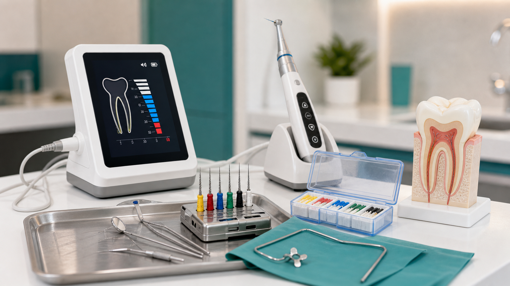

Muitas pessoas associam o canal a dor, mas na prática o procedimento costuma ser procurado justamente para tratar uma dor que já existe. A ideia do tratamento é remover a polpa inflamada ou infectada, limpar o interior do dente e permitir que ele continue em função, quando ainda é possível preservá-lo.
Por que realizar o tratamento de canal?
O principal benefício é preservar o dente natural. Quando uma cárie profunda, trauma ou infecção atinge a parte interna do dente, adiar a avaliação pode aumentar o risco de dor intensa, abscesso, inchaço e até perda dentária.
Ao tratar o canal, o profissional busca controlar a infecção, aliviar a dor, manter a estrutura do dente e evitar que o problema evolua para tratamentos mais complexos.
Canal pode ser feito com pouca dor?
Sim, o tratamento pode ser feito com muito mais conforto do que muita gente imagina. O atendimento é realizado com anestesia local e, dependendo do caso, com recursos que ajudam a localizar, medir, limpar e preparar os canais com mais precisão.
Não é correto prometer “dor zero” para todos, porque cada paciente tem uma condição diferente. Mas, com profissional especializado, técnica adequada, anestesia bem controlada e equipamentos apropriados, o desconforto tende a ser mínimo e o objetivo é chegar o mais próximo possível de uma experiência sem dor.

Em quantas sessões o tratamento é feito?
Depende. Alguns tratamentos podem ser realizados em uma única sessão ou em poucas sessões, principalmente quando o caso permite um controle adequado da dor, limpeza e vedação do canal. Outros casos exigem mais etapas, especialmente quando há infecção mais extensa, secreção, retratamento ou necessidade de acompanhamento.
A avaliação inicial é essencial para entender a condição do dente, a anatomia dos canais, a presença de infecção e o melhor plano para cada paciente.
Quem deve realizar o tratamento de canal?
O canal deve ser feito por cirurgião-dentista capacitado e, quando indicado, por profissional especializado em endodontia. Essa área da odontologia cuida do diagnóstico e tratamento da parte interna do dente.
Na LaCari Odontologia, o paciente recebe orientação sobre o diagnóstico, etapas do tratamento e cuidados após o atendimento, para que a decisão seja feita com clareza.
O que acontece se eu não tratar?
Quando há inflamação ou infecção interna, o problema pode evoluir. A dor pode aumentar, pode surgir inchaço, o osso ao redor da raiz pode ser afetado e o dente pode perder possibilidade de recuperação.
Quanto antes o dente é avaliado, maiores as chances de conduzir o tratamento de forma planejada e preservar a estrutura dentária.
Está com dor de dente ou recebeu indicação de canal?
Fale com a LaCari Odontologia. A clínica fica na Avenida Pires do Rio, 3369, no Jardim Norma, região de Itaquera. Envie sua dúvida pelo WhatsApp e agende uma avaliação.
Agendar avaliação pelo WhatsAppFontes consultadas
Este conteúdo tem caráter informativo e não substitui avaliação odontológica. Para embasamento geral, foram consultadas referências públicas da American Association of Endodontists, da Mayo Clinic e do NHS sobre tratamento de canal, anestesia, preservação do dente e alívio da dor.